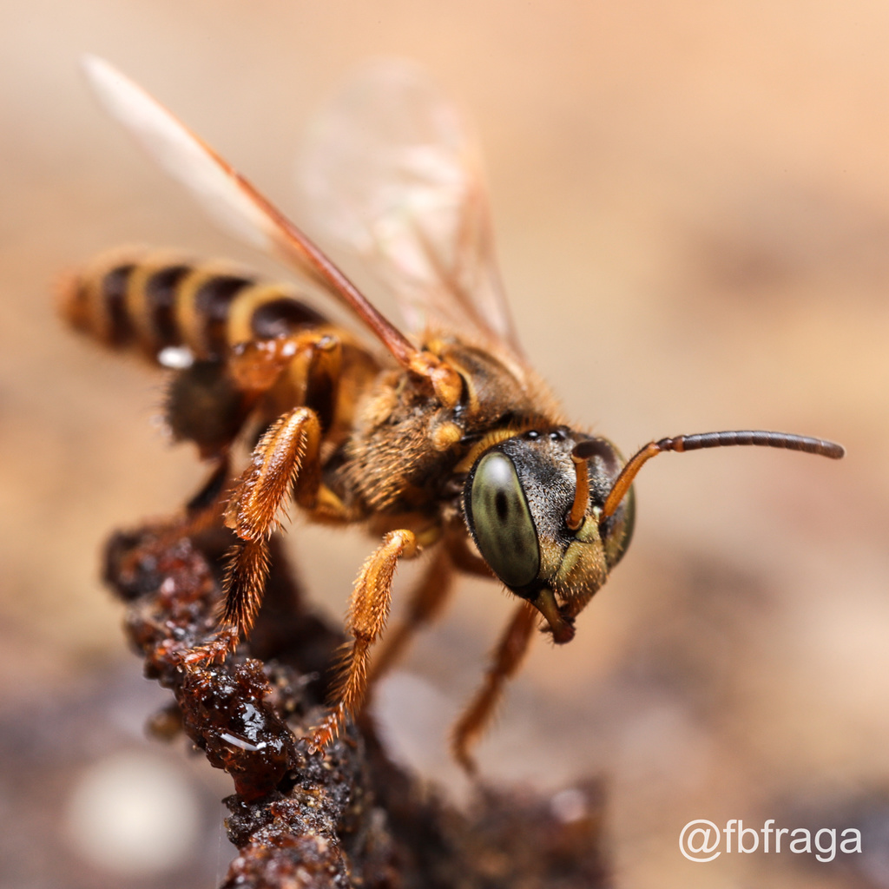

Kidoguroe
Abelha borá
Tetragona clavipes

How to cite
Kidoguroe. In: Boe Eno Moto, Fauna. https://boeenomoto.terradoc.org/en/fauna/97-kidoguroe.html
Abelha borá
Tetragona clavipes

Kidoguroe. In: Boe Eno Moto, Fauna. https://boeenomoto.terradoc.org/en/fauna/97-kidoguroe.html